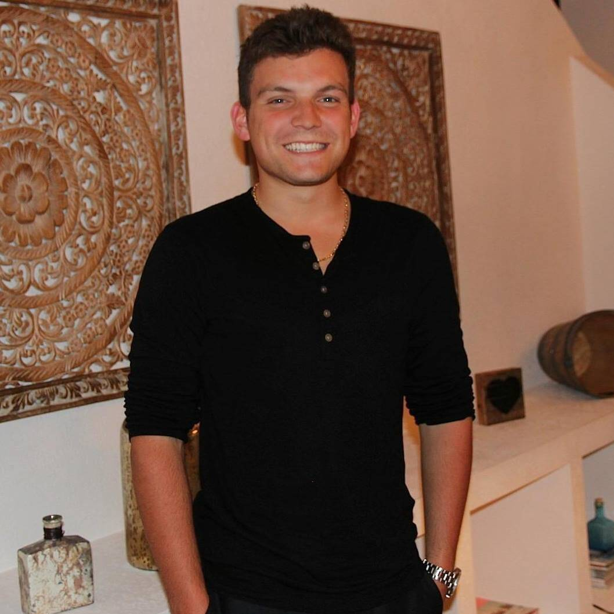

About

I am a Senior Sport Administration major at the University of Miami. I have a strong work ethic, and am pursuing a minor in Business Law. I am from Toronto, Ontario, Canada and grew up playing hockey. I have always loved sports and would like to work for a professional team one day.
Work Experience
SBLA Beauty Inc.
Social Media and Customer Service Associate
Job Responsbilities
- Developed, managed and observed marketing content.
- Promptly responded to customer inquiries.
- Explored and implemented new customer engagement channels through social media.
Camp Walden
Sports Specialist
Job Responsbilities
- Guided and secured the wellbeing of 14 campers using communicative techniques to ensure dependability and reliability, as well as a memorable experience for everyone.
- Organized, planned and managed sporting activities for boy and girl campers ages 7 to 16 to fulfill enjoyment and satisfaction for all.
Education
| Diploma/Degree |
Institution |
Year |
| University of Miami |
Bachelor of Science in Sport Administration |
2020 |
| Toronto Prep School |
High School Diploma |
2016 |
Volunteering
University of Miami Athletics – Marketing/Event Operations
- Aided in planning, organizing and fulfilling University of Miami sporting events including Women's Basketball, Women's Soccer and Women's Volleyball.
-
Carried out marketing initiatives from local sponsors at University of Miami Baseball games.
Skills
-
Organization/Computer: Time management, Microsoft Office, Microsoft Excel, Microsoft PowerPoint and social media platforms.
-
Communication: Team-first mentality willing to do whatever it takes to produce the best work possible from myself and my peers through lasting relationships.
-
Strengths: Loyal, hard-working, open-minded, creative